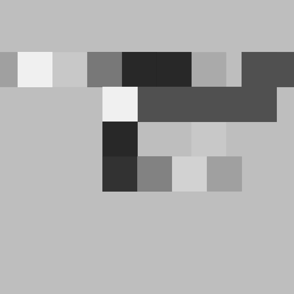
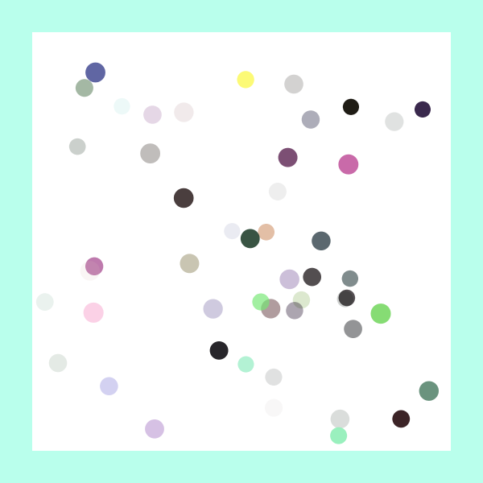
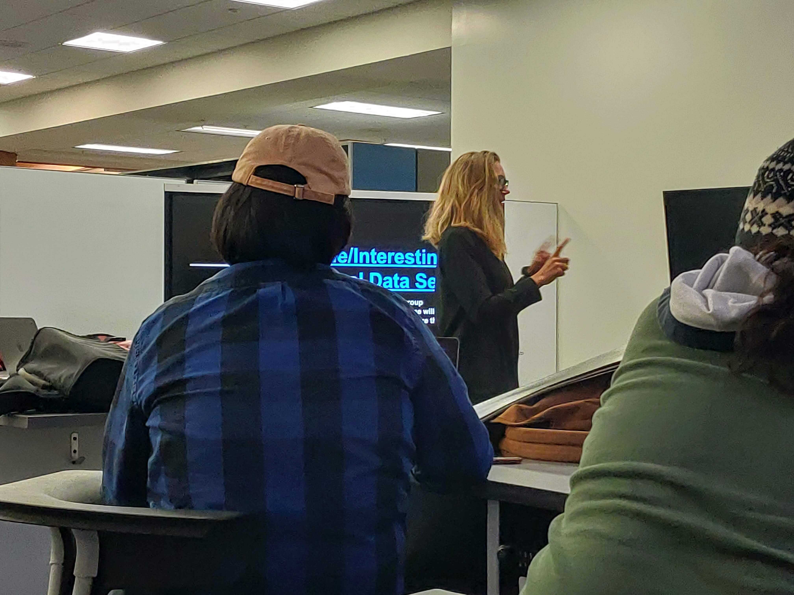
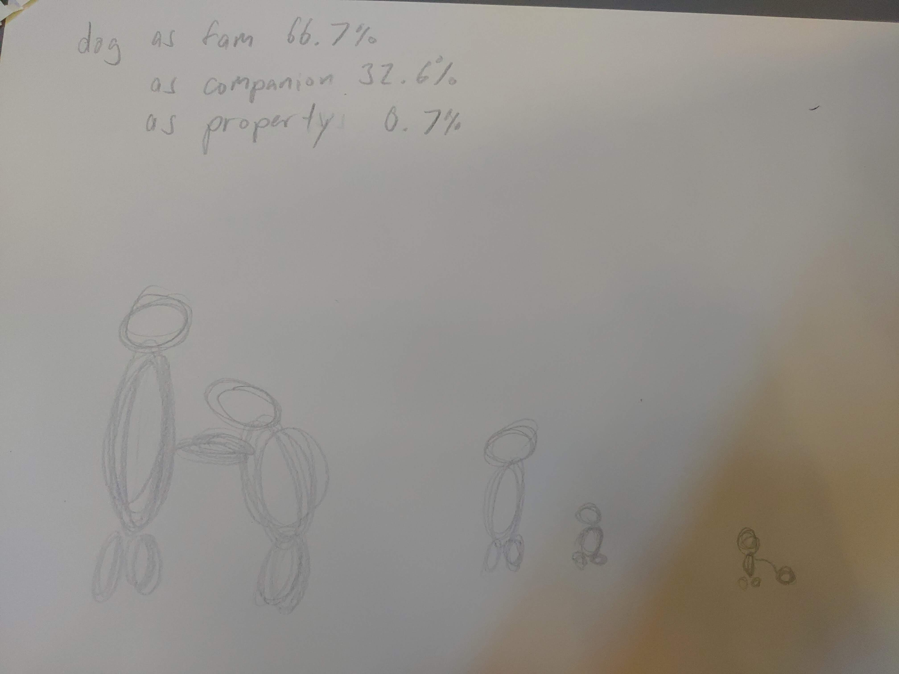
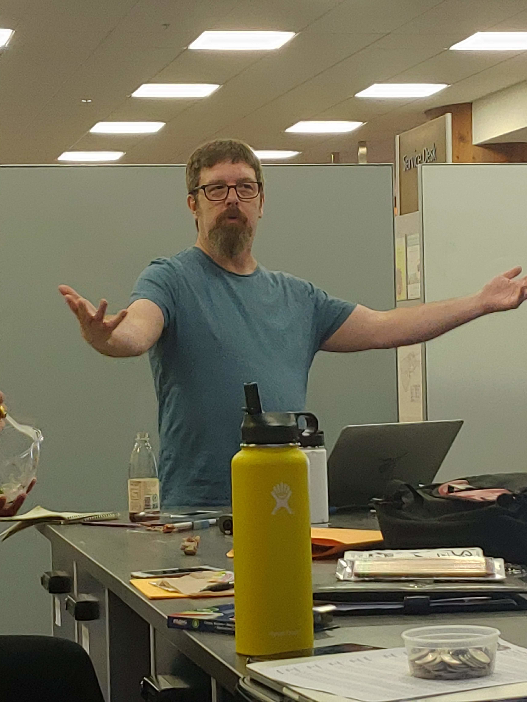
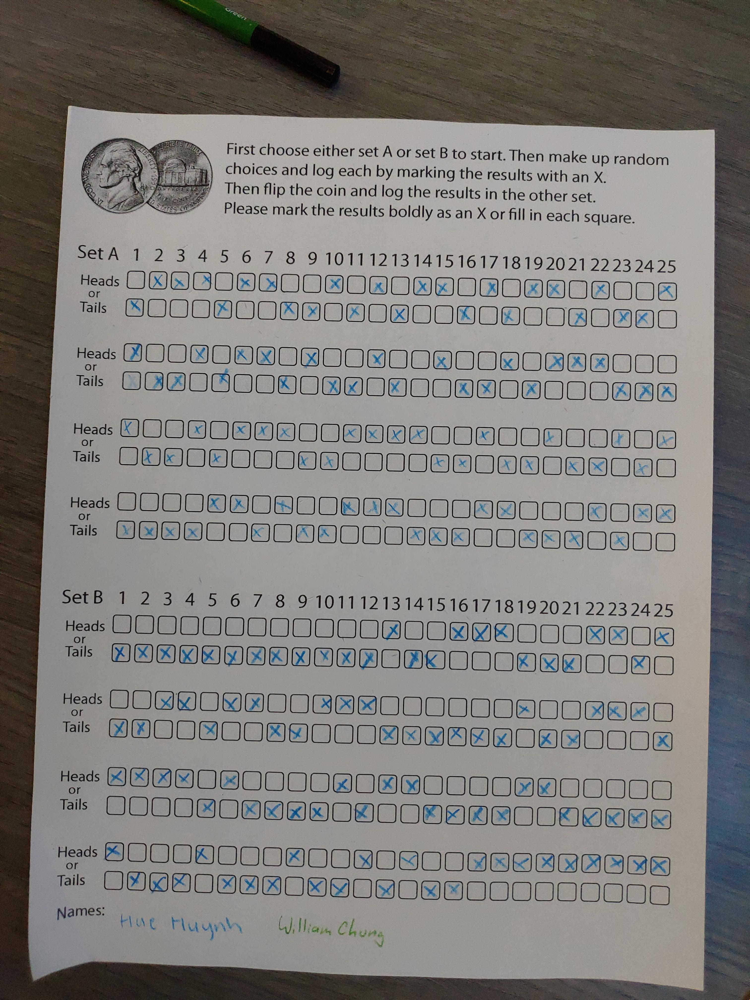
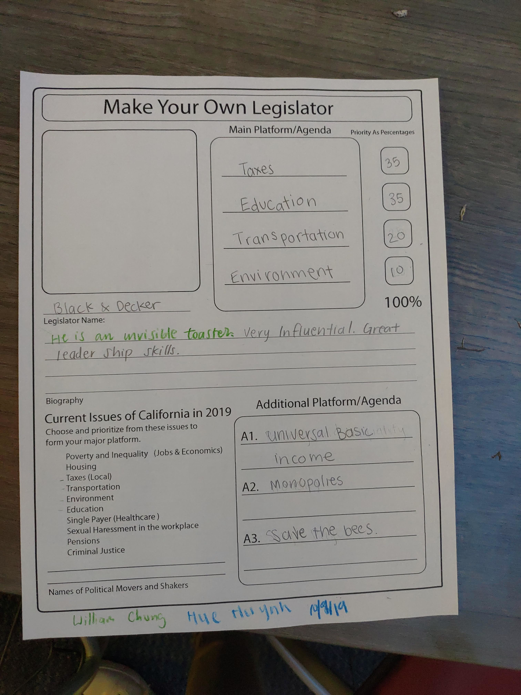

Project 1 Your browser does not support HTML5 video. Exercise 1 In this exercise, I leaned to use sine wave function (which I used in oscillating the width of the red ellipse), nested for loops, and other functions within processing. Code here Your browser does not support HTML5 video. Exercise 2 For this exercise, I created custom wrapper functions that changed how the user 'draws' on the canvas, incorperated text, and also added images to the processing sketch. Code here Your browser does not support HTML5 video. Project 1 I used my prior programming language that I learned from other classes to create custom functions, logical statements, and algorithms to create this monochromatic drawing tool. I wasn't successful in making an artistic creation with any of my drawings, so I hope I could improve on that in other ways. Code here
Project 2 Your browser does not support HTML5 video. Exercise 3 In this example, I learned to impliment wrap-around code along with flipping directions of variables. This is also paired with the use of arrays. Code here Your browser does not support HTML5 video. Exercise 4 For this exercise, I implimented object oriented programming along with push matrix in order to move things around the canvas. Code here Your browser does not support HTML5 video. Project 2 I used object oriented programming and created a blob which crashed my computer. The algorithm used in the program was the noise function and it was used to determine the position of the individual rectangles. Code here
Project 3  Exercise 5a In this exercise, I modified my code from exercise 2 to run within the browser using P5.js. I also cleaned up the code to make things easier to read. Play exercise here Code here  Exercise 5b Similar to the previous exercise, I modified the code that I have for exercise 3 and made it able to run inside the browser with P5.JS. Play exercise here Code here Project 3 The P5 clock has seconds denoted by the two bars extending from the top left of the screen, the minutes extending from the top right, and the hours extending from the left wide of the screen. AM and PM is denoted by the orientation of the hours represented. Hours would extend downwards during the mornings and would start extending upwards during the afternoon. Play exercise here Code here
Reading 1 1. I have no idea what a good definition of how any kind of artist can use algorithms in their art, but I think most artists use some form of algorithm though. 2. Some examples in where I might have already used algorithms in my art work include putting down a pen and drawing a line or shape. 3. I think that Harold Cohen and AAron's art is in the abstract outcomes and the unpredictability of outcomes. I believe that the outcome of the tree is also a form of art. The next artist, Miguel Nobrega's Super Fiscie. I think his art is in the progra,. Lastly, I also think that the art is in the program in the pentametron. 4. A well known artist I consider to have an iconic style would be Tim Burten and his Gothic Style. As described, his style has a gothic look mixed with a hint of modernism. 5. The Rock Paper Scissor Spock Lizard article is pretty straight foward and has few steps explaining how the game works. The articles about brushing teeth and making pizza, however, are detailed and concise at the same time. Lastly, the articles about making a plane and making instructions are pretty short and not extremely detailed.
Reading 2 1. To sum up the differences when given the Wikipedia definitions of data and information, data is to value, while information is to knowledge. 2. The difference between visualization and mapping is that visualization is the process of data while the mapping is the organization of the data that is currently available. 3. Manovich is referring to how visualization is something that is not subliminal and that there could be many different aspects to the processing of visualization. Yes, I agree with his notion. 4. Feltron is a graphic designer that worked with data that pertained to location and user-generated information. Felton created posters, yarn compositions, and other things that represented the information that he has collected. 5. Feltron is a graphic designer that worked with data that pertained to location and user-generated information. Felton created posters, yarn compositions, and other things that represented the information that he has collected. 6.      For workshop 1, I used my pencil and symbolic representation to display my data. For workshop 2, I think the exercise could be improved with changing the coin to a dice, which would have more outcomes possible as opposed to just a binary outcome from a coin.